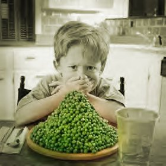
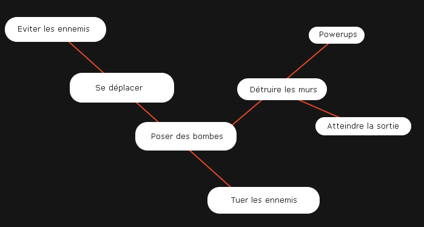

Comment aller à l'essentiel et donner aux joueurs ce qu'ils veulent
L'article original est écrit par Joshua Dallman publié par Makeitbigingames (septembre 2007).
L'auteur original n'est en aucun cas reponsable de la précision de cette traduction.
Il est important dans la conception d'un jeu de tout faire pour donner au joueur ce qu'il est venu chercher : de la satisfaction. Cet article décrit une technique qui vous aidera à centrer votre jeu autour de son concept et à donner aux joueurs ce dont ils ont envie (et aussi à éviter de leur donner ce qu'ils ne veulent pas). Il ne s'agit que d'une méthode, et pas de la vérité ultime sur le sujet, mais essayez la et voyez si elle vous convient.

Bien, vous avez une idée de ce que votre jeu va être, mais vous n'avez pas encore détaillé le concept à 100%. Vous avez parfois un peu l'impression d'être un musicien de jazz qui essaye différents riffs et qui choisit ce qui sonne le mieux. Au bout du compte, tant que que le jeu marche bien (c'est à dire qu'il est amusant), la façon dont vous êtes arrivé là importe peu. Ou peut être que si en fait : Dans les dernières phases de Game Design il faut être structuré pour pouvoir bien balancer le jeu et, contrairement à la peinture abstraite où tout se fait au pif du début à la fin, le Game Design est en bonne partie une affaire de méthodologie. La méthodologie poussée à l'extrême supprime la composante créative du Game Design, mais si l'on en use avec parcimonie, le jeu en bénéficie. Ce qui va suivre est une technique simple que j'emploie pour aller à l'essentiel qui a déjà aidé plusieurs développeurs en plus de moi. Il s'agit d'un nouvel outil pour votre arsenal de concepteur. Commençons sans plus attendre !
NdT : Cet article a été écourté. Referez-vous à l'original pour lire l'exemple final tronqué.
La manie de tout lister
Les Game Designers sont souvent aussi des programmeurs, chez qui les idées tendent à s'organiser de façon linéaire et textuelle. C'est une bonne façon de penser pour écrire du code, mais pas pour concevoir des jeux. La programmation vit dans un monde d'absolus, où x a une valeur précise et où y a une tâche précise. Le Game Design vit lui dans un monde relatif dans lequel les relations entre deux éléments sont aussi importantes que ces deux éléments en eux même.
Prenons par un exemple un jeu du style Bomberman. Pour un programmeur, le jeu se résume à une suite de fonctions qui sont des techniques à mettre en œuvre :
- Mouvement du joueur
- Capacité à poser des bombes
- Pouvoir faire sauter des murs
- Pouvoir détruire les ennemis
- Pouvoir éviter les ennemis
- Powerups
- Sortie de niveau
Cette façon de voir les choses est tout à fait pertinente pour programmer le jeu. Mais cette liste logique, linéaire et textuelle ne montre pas du tout les relations qu'entretiennent les différents éléments et leur importance relative. Il y a une meilleure méthode.

Ce que vous voyez ci-dessus est un diagramme visuel qui reprend les mêmes informations (mais ce n'est PAS un flowchart (organigramme de programmation)). Il s'agit d'une liste des fonctionnalités du jeu arrangées d'après leurs relations : ce n'est ni une représentation parfaite ni un diagramme technique, c'est simplement une approximation qui détermine les éléments importants (ou pas) du jeu et qui décrit leurs relations. Il y a moyen de faire un tel arrangement pour chaque jeu (y compris le vôtre) et vous ne pouvez pas vous tromper : on voit tout de suite quand c'est bon. Cela n'aura peut être pas un grand sens logique en terme de positionnement, mais il existe un arrangement qui vous semblera intuitivement être le bon.
Un seul jaune dans mon œuf
La première question à laquelle vous devez répondre est : « Quel est le cœur de votre jeu ? Quel est au fond le sujet de votre jeu ? Quelle est l'idée centrale ? Qu'est ce qu'on y fout ? » Dans le jeu style Bomberman ci-dessus, le cœur du jeu c'est de faire sauter des trucs ; vous savez…BOOM : des explosions. C'est ce qu'on fait le plus dans ce jeu, c'est ce qui est marrant dans ce jeu, et c'est ce autour de quoi tourne ce jeu. Dessinez le cœur au centre de votre diagramme et entourez le en gros. Tout le reste de votre concept devrait avoir rapport à ce cœur. Tout devrait y renvoyer et le soutenir.
Si votre cœur est dispersé entre plusieurs petits éléments, vous n'avez pas de cœur. De même, si votre cœur est réparti sur deux éléments parce que vous combinez avec maestria deux choses différentes, vous n'avez pas non plus de cœur. La terre a un noyau, une pomme a un trognon et mon œuf n'a qu'un jaune : un cœur est un cœur parce qu'il est unique. Le cœur en tant que sujet de votre jeu doit être unique, mais il peut par contre être une idée abstraite comme « faire peur au joueur ». Ce qu'il faut c'est un cœur précisément défini et bien encadré. Vous l'aurez compris, le cœur de Bomberman ce sont les bombes.
Une fois votre cœur situé, arrangez les autres éléments du jeu pour que leurs rapports aient du sens. Il n'y a pas de méthode précise pour y arriver : essayez jusqu'à ce que cela vous semble bon.
Est-ce que c'est ÇA l'intérêt ?
Maintenant que vous avez votre diagramme sous les yeux et que vous savez autour de quoi votre concept est centré, posez vous cette question : « Est-ce que le cœur du jeu est aussi l'élément le plus intéressant du jeu ? Est-ce que l'on va faire dans votre jeu est ce qu'on a le plus envie d'y faire ? Y'a-t-il des éléments de divertissements qui émergent spontanément et qui sont plus amusants que ce autour de quoi le jeu est construit ? ».
Soyez honnête avec vous même et faites tester votre jeu, il se peut que vous ayez besoin de réaliser un prototype pour pouvoir répondre à ces questions. Le Game Design consiste aussi à expérimenter, et le divertissement n'aboutit pas toujours là où on a voulu le mettre. Utilisez comme cœur ce qui est divertissant plutôt que de forcer un autre élément à devenir divertissant, et votre jeu en sortira sûrement meilleur.
Soutenir le cœur
Maintenant vous avez un diagramme avec un cœur, et le cœur est aussi la partie la plus intéressante du jeu. La question suivante est : « Soutenez vous le cœur du projet ? » Tout d'abord, commencez par imaginer des moyens de soutenir le cœur. Remarquez que dans Bomberman, c'est l'action de placer des bombes qui a le plus de conséquences : elle pousse le joueur à se déplacer (pour éviter les explosions), elle peut briser des murs (ce qui conduit à des powerups ou à la sortie), elle peut éliminer les adversaires (la meilleure récompense possible). On aurait pu concevoir le jeu de façon à soutenir le déplacement du joueur en lui faisant briser les murs en courant à travers et en faisant mourir les ennemis de la même façon (moyennant un powerup qui permet de les vaincre, comme dans Pac-Man). Cependant, agir ainsi n'aurait pas soutenu le coeur du jeu qui réside dans les bombes.
Dans Pac-Man, ce qui est marrant c'est de manger les petits palets. Chomp chomp ! Du coup ils ont rajouté des palets qui donnent des capacités spéciales, et ensuite ils ont ajouté une capacité qui transforme les fantômes ennemis en palets ambulants. C'est un soutien très bien trouvé !
Si on pouvait avoir un deuxième bouton pour jouer à Bomberman, il faudrait permettre une autre façon d'utiliser les bombes. Il ne faudrait pas un bouton « courir » et encore moins un bouton pour utiliser quelque chose qui n'a rien à voir comme un pistolet. Un bouton courir soutiendrait le mouvement du joueur (ce qui n'est pas le cœur du jeu), tandis qu'un pistolet serait complètement isolé sur nos diagrammes et seulement en relation avec « éliminer les ennemis ». Un deuxième bouton pour utiliser des bombes pourrait permettre de les faire rouler jusqu'au mur le plus proche. Cela ajouterait un peu de profondeur au gameplay tout en soutenant le concept de bombe. D'ailleurs le titre du jeu est Bomberman et pas CoursEtPoseDesBomberman.
Pensez à d'autres façons de soutenir le cœur.
Pour Bomberman, cela pourrait signifier des bombes de différents types comme par exemple des bombes IEM qui paralyseraient les robots ennemis sans blesser le joueur, ou alors d'autres façons de lancer les bombes, comme par exemple un bouton pour les jeter par dessus les murs plutôt que de les poser devant soi. Du côté des graphismes, les explosions avaient intérêt à être réussies : un ou deux ennemis mal foutus auraient pu passer mais les bombes étant le cœur, c'est elles qu'il fallait soigner.
En bref pensez à différentes façons créatives de soutenir votre cœur, ensuite pensez à soutenir les plus intéressants de ces soutiens etc. …c'est la partie amusante du Game Design : soyez créatifs et flexibles. A vous de voir si vous le faites détaillé ou seulement dans les grandes lignes, essayez un peu tout et amusez vous. =)
Dégraissage
Maintenant que vous avez planifié plein de fonctionnalités que vous pourriez inclure, il est temps de faire le ménage pour aboutir à un concept propre, élégant, centré et surtout fai-sa-ble. De toute façon un jeu avec trop fonctionnalités est comme un plat avec trop d'ingrédients. Il devient de plus en plus difficile de régler la balance à chaque nouvelle fonctionnalité et le résultat est souvent trop ambitieux, dilué ou bordélique. En plus de cela, le concept du brainstorming consistait à réunir plein d'idées pour ne garder ensuite que les meilleurs : le moment de faire le tri est arrivé.
Regardez votre diagramme et déterminez comment vos idées renvoient les unes aux autres. Idéalement, il faudrait que les éléments soient liés autant que possible, comme une toile d'araignée ou une tapisserie, plutôt que d'avoir quelques groupes isolés qui n'auraient plus de sens une fois reliés.
Il y a beaucoup de raisons qui peuvent pousser à supprimer une fonctionnalité et il se peut qu'il faille réaliser des prototypes pour déterminer le véritable intérêt d'une idée. Parfois les fonctionnalités à garder sont déterminées par le budget (un moteur physique par exemple coûte cher mais n'apporte pas toujours grand chose par rapport à de fausses relations physiques). Ne soyez pas trop attaché à vos fonctionnalités et montrez vous sans pitié avec elles : si une fonctionnalité n'en vaut pas vraiment la peine ou ne soutient pas assez le cœur (voire pire, détourne le cœur ou est orpheline sur le diagramme), envisagez de vous en débarrasser.
Aider et pénaliser le joueur
A mesure que vous modifiez le concept, en enlevant et en ajoutant des fonctionnalités, gardez à l'esprit quels éléments sont là pour aider et pénaliser le joueur, afin de maintenir un certain équilibre. Par exemple, si votre cœur consiste à poser des bombes, dans ce cas les aides doivent aider à placer des bombes : imaginez des tonneaux qui explosent aussi et provoquent des réactions en chaîne, des powerups qui augmentent la puissance de vos bombes, des murs qui s'écroulent tout seul à proximité de vos bombes pour révéler l'existence de powerups ou la sortie. Équilibrez les aides et les pénalités pour que le jeu ne soit ni trivial ni trop difficile ou sec. Si les joueurs ont du mal avec certains passages, essayez de les modifier avant de les supprimer : il leur manque peut-être juste un petit coup de pouce.
Utiliser des diagrammes pour centrer votre concept est une idée d'une simplicité désarmante mais qui peut mener à des résultats impressionnants. Au moins, cela vous force à réfléchir à votre concept et le voir d'une façon dont vous n'avez pas l'habitude. En vous interrogeant et en bricolant votre concept, vous ferez un meilleur jeu.
Ajouter un commentaire
Commentaires

Très bien écrit. J'y vois un lien assez fort avec les "Primary Mechanics" de Kirby Kid (critical-games).
/@PypeBros.
Excellent article, comme d'habitude. J'ai débarqué sur ce blog pour le pixel art et… bah voilà, j'y reviens trois ans plus tard en tentant de comprendre les erreurs que j'avais faites. Et cet article vient de résumer très aisément mon soucis : J'ai pas 1… mais 3 coeurs en réalité et ce qui devait être mon coeur est totalement étouffé par les fonctions annexes.
Merci, grâce à vous je sais comment repartir et corriger ça !
Vraiment très instructif !!! J'ai vu pas mal de techniques pour développer l'idée du jeu, et c'est bien celle là que je préfère.
C'est l'aspect visuel et schématisé qui rend ça plus facile pour notre cerveau, vu que son fonctionnement est-comme un diagramme ou plus précisément un système d'arborescence avec une idée centrale.
J'aimerais toutefois avoir une précision sur cet article, car j'ai du mal à cerner le coeur du prochain jeu que je vais développer (j'ai déjà bien avancé dans le GDD du jeu mais quand j'ai vu cet article j'ai tout de suite essayer de placer mon jeu dans ce contexte :D ).
Pourriez-vous donner plus d'exemples adaptés à des jeux plus récents que bomberman et pac-man, comme par exemple (c'est en rapport avec l'idée de mon jeu) que pensez vous du coeur de "Zelda Ocarina of time" ou "Fable" étant des jeux d'aventure… est ce qu'on peut dire que le coeur de ces jeux est quelque chose de général comme "de l'aventure palpitante" ?